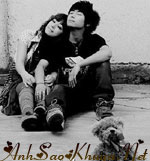

|
Ngày còn bé, anh cũng có rất nhiều những giấc mơ. Những giấc mơ thật ngớ ngẩn, hay nói đúng hơn chỉ là những sở thích, cứ thích gì thì ước vậy thôi, chẳng cần biết liệu có làm được hay ko. Có những ước mơ chỉ một vài hôm sau là trở thành sự thật, và có những giấc mơ mãi sau này anh mới biết chúng thật là trẻ con: những giấc mơ về hoàng tử, công chúa, rồi những siêu nhân. Thời gian trôi qua, khi ko còn là một đứa trẻ nữa, anh vẫn luôn có những giấc mơ cho riêng mình. Chỉ khác một điều, những giấc mơ ấy, anh biết chính xác mình có thể làm được hay ko, giấc mơ nào có thể hi vọng, và giấc mơ nào là vô vọng để từ bỏ.Nhưng có một giấc mơ, dù biết rằng nó sẽ ko bao giờ là có thật,anh vẫn luôn giữ lại nó cho riêng mình. Giấc mơ ấy... về em . Trên con đường mà anh đang bước, giấc mơ về em mãi giống như một thứ gì đó quá đỗi xa vời..Nó ở rất xa, xa tới mức anh chỉ có thể nhìn thấy mà ko bao giờ với được.Từng ngày trôi qua, giấc mơ ấy giống như một ngôi sao, luôn sáng ở trên cao.Để mỗi lần gục ngã trên con đường kia, anh lại nhìn lên, để tìm lại cho mình những niềm tin, động lực để tiếp tục bước tiếp.Và để anh biết rằng: cuộc sống này vẫn ko hề vô nghĩa. Có nhiều người đã nói với anh rằng: liệu giấc mơ ấy có thật sự hoàn mĩ, đáng để cho anh hi sinh và theo đuổi, theo đuổi trong vô vọng. Làm sao có thể bắt anh nói như vậy, vì có thể với họ đấy chỉ là một điều rất bình thường. Còn với anh, nó là tất cả, là tất cả của riêng anh.Thế gian này cần chúng ta, cần mọi thứ để tạo nên một thế giới, nhưng thứ duy nhất trên thế giới này mà anh cần, chính là em.  Những ngày đã quá, những niềm vui khi được ở bên em, trò chuyện cùng em, giúp em làm một điều gì đó. Thật kì lạ, hơn bao giờ hết, anh cảm nhận rất rõ ràng đấy chỉ là tình bạn, và anh đã "ko hề ngộ nhận", sự ngộ nhận chỉ làm khổ cho cả hai ta.Anh sẽ chẳng bao giờ chỉ vì một giấc mơ của riêng anh mà khiến ai đó phải buồn đâu em. Có một điều mà giờ đây, anh vẫn luôn tự nói với bản thân mình rằng:" nếu như, chỉ là nếu như thôi. Nếu như em chưa có người ấy ở bên mình, thì chắc chắn anh sẽ ko hèn nhát như ngày xưa nữa. Anh sẽ tới và nói với em rằng: anh yêu em rất nhiều. Để rồi sau đó, dù cho kết quả có thế nào cũng được, anh sẽ chấp nhận.Và dù có thế nào đi nữa, thì giấc mơ kia cũng sẽ ko bao giờ thay đổi". Nhưng đấy chỉ là nếu như thôi, chứ giờ thì em đã có người ta thật rồi. Anh cũng chẳng giám mong gì hơn cả. Vẫn mong em được hạnh phúc, mong em luôn vui vẻ, mong người ấy ở bên em sẽ mãi mãi thật lòng.Còn anh, sâu thẳm trong anh cũng buồn chứ. Dù có yêu em đến nhường nào đi nữa, thì lòng này cũng sẽ rất đau khi người bên em lại ko phải là anh. Nhưng kệ nó đí,quan tâm làm gì.Giờ anh chỉ mong muốn vẫn được ở bên em như một người bạn, để mỗi ngày lại được nhìn thấy em, được chia sẻ cùng em, được làm một điều gì đó cho em mỗi khi em cần tới. Liệu rằng điều ấy có được ko hả em !? Ngốc quá phải ko em, hj`,nói gì đi nữa thì anh vẫn là một kẻ ngốc. Nhiều người bảo vậy, và nhiều lúc anh cũng tự thấy mình như vậy.Ngốc, nhưng thật lòng . Đừng bao giờ trách kẻ ngốc nghe em. Nguồn: Bản quyên thuộc về (AnhSaoKhuya)ASK || Tham gia bình luận TẠI ĐÂY ||
Bạn vô tình đọc ở đâu đó một câu chuyện tình cảm động hoặc một câu chuyện do chính bạn viết ra. Hãy đến với chúng tôi để cùng nhau chia sẻ: wWw.anhsaokhuya.net
Chung tay vì một thế giới online lành mạnh !
|